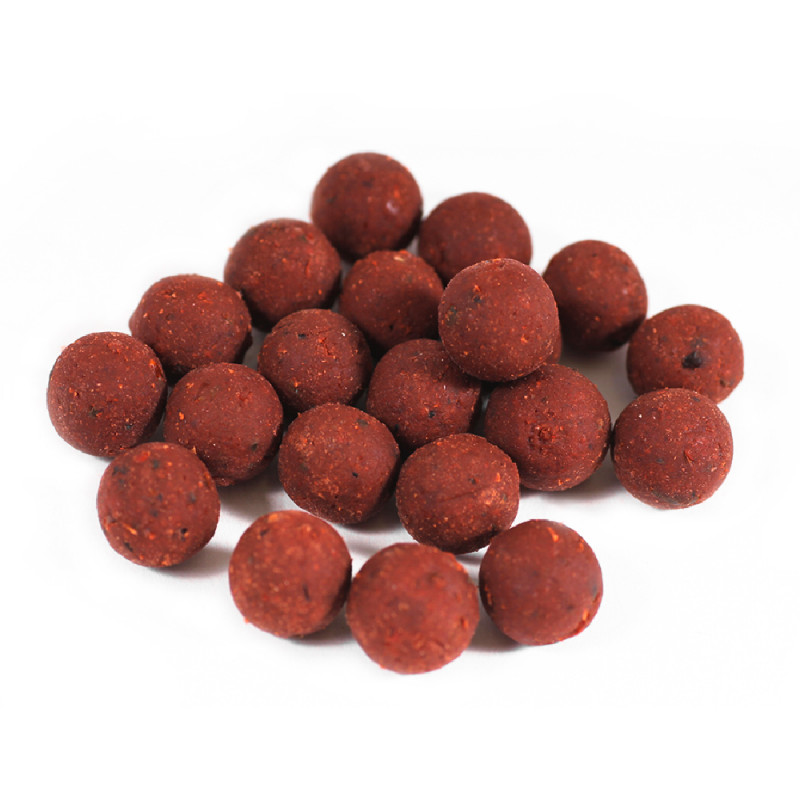
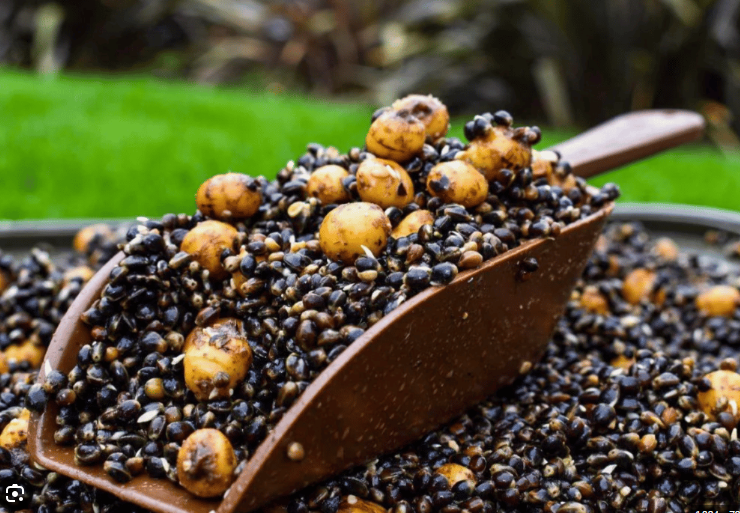

Appâts Utilisés
Types d'appâts recommandés pour la pêche à la carpe...
Bouillettes
Les bouillettes sont l'appât de prédilection pour la pêche à la carpe. Elles sont disponibles dans une variété de saveurs et de tailles, offrant une grande flexibilité pour s'adapter aux préférences des carpes
Maïs
Le maïs, qu'il soit naturel ou artificiel, est un appât économique et populaire. Les carpes sont attirées par sa couleur vive et son goût sucré.
Particules
Des particules telles que les graines de tournesol, les haricots et les pois, de pellets peuvent également être utilisées pour attirer les carpes. Elles ajoutent de la diversité à l'amorce et peuvent être très efficaces.
